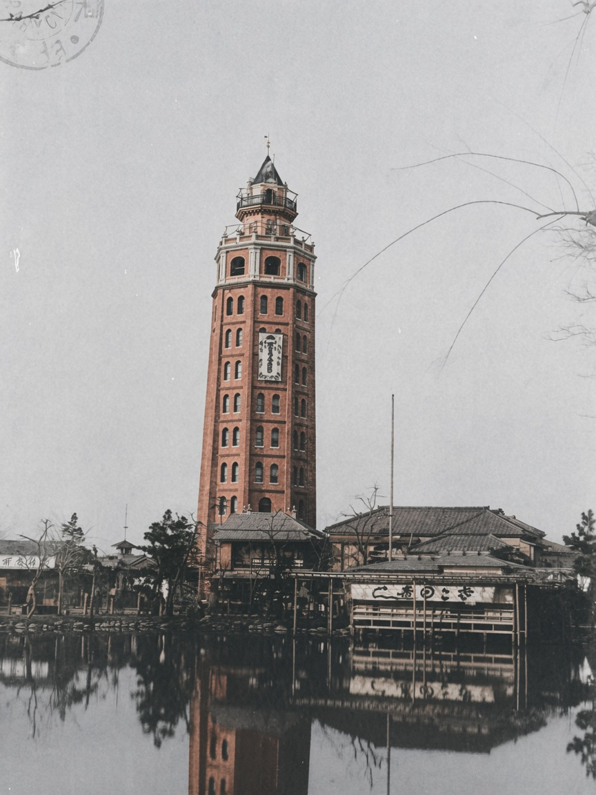
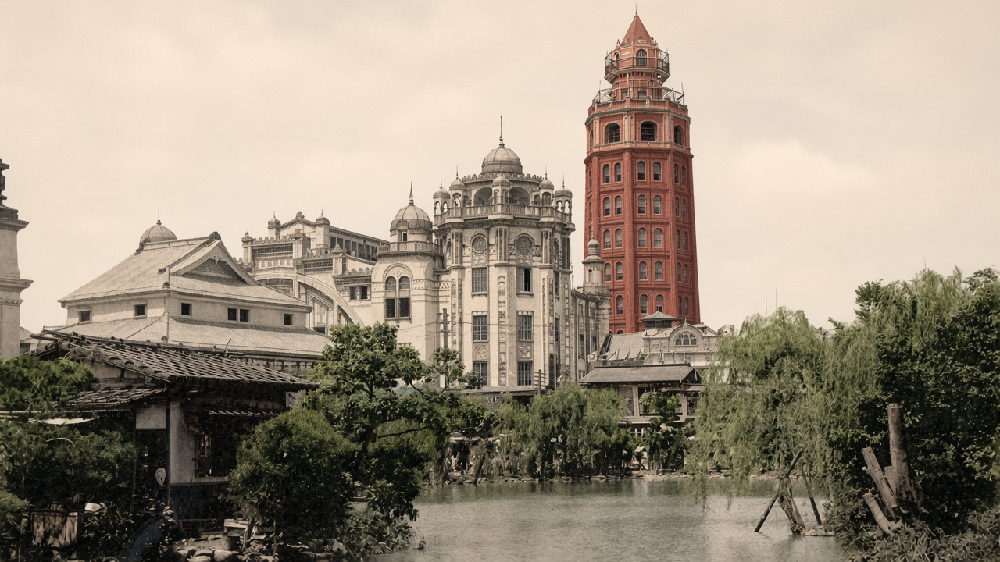
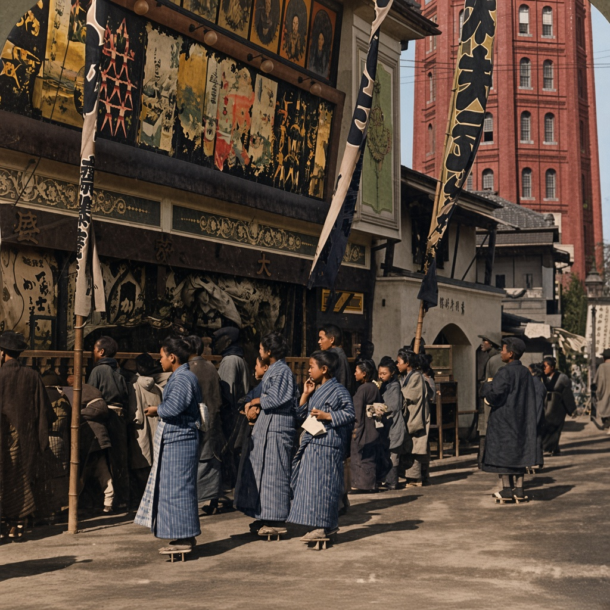
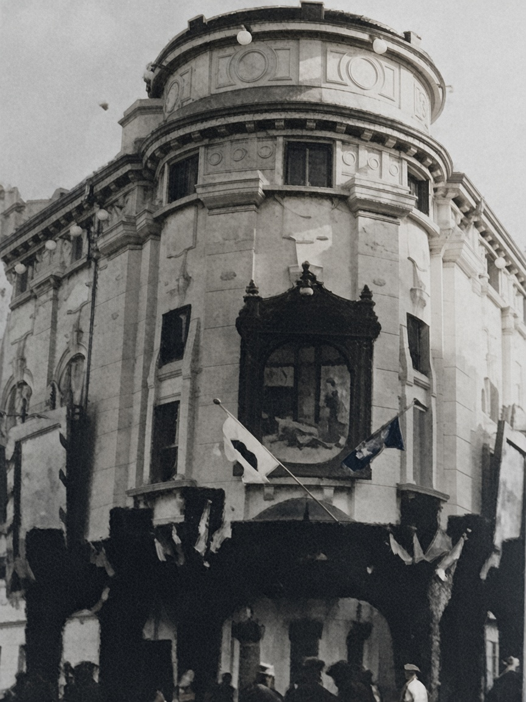
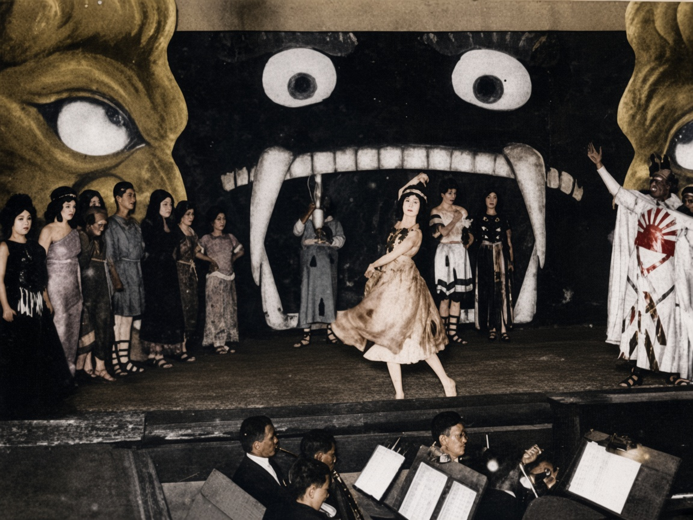
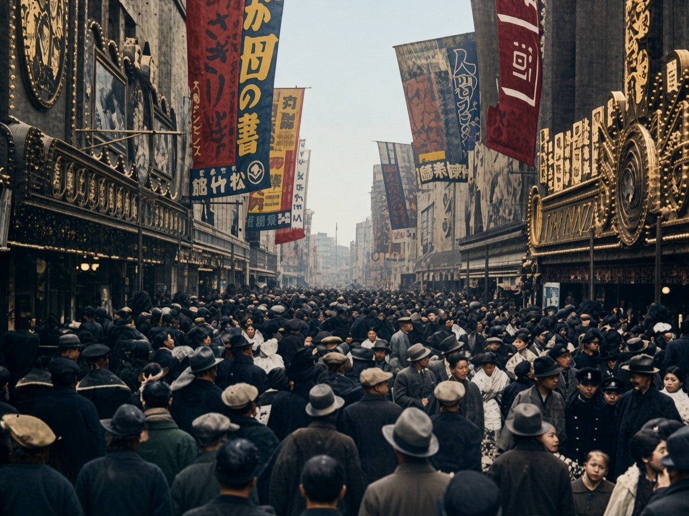
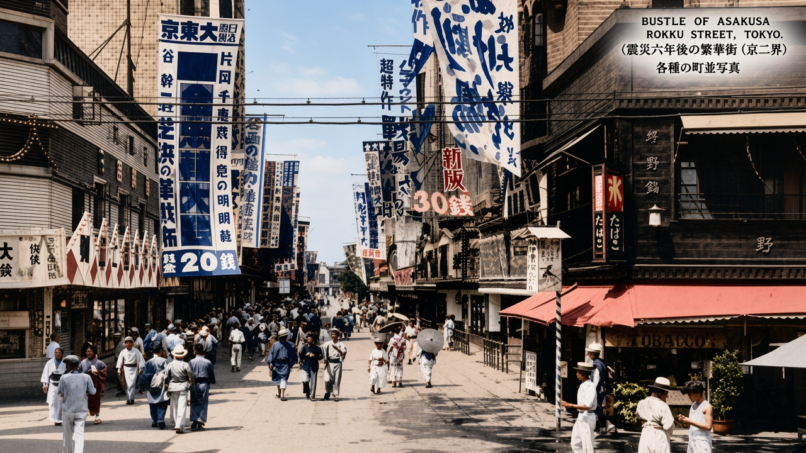
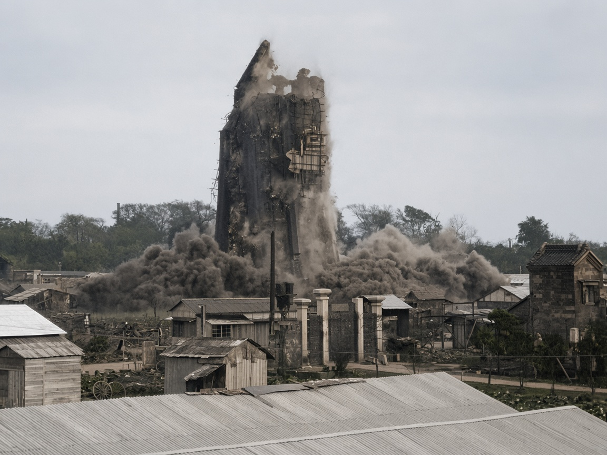

01 · 1890–1923 · 浅草公园
十二阶
一座细高的砖塔立在池边，八角形的顶，一层一层的拱窗。塔下是瓦屋顶的铺子。塔影落在水里。这是凌云阁，东京人叫它十二阶。
1890 年开业，设计者是英国人伯顿。里面有日本最早的电梯，电梯只到八层，再往上走楼梯。顶上可以看浅草。砖的红色是着色推定。
浅草 · 见世物
银座卖的是橱窗和洋装。浅草六区卖的是塔、画布、歌剧和活动写真。十二阶从 1890 年立到 1923 年被拆，这条街比大正更早开始，地震以后电影院还在。
八张都是黑白或单色原片，着色按原片上色。画布和衣服的颜色是推定。1904 年那张从立体照片的左半裁出，右半和卡纸边留在原文件里。点图放大，可切回原片。

01 · 1890–1923 · 浅草公园
一座细高的砖塔立在池边，八角形的顶，一层一层的拱窗。塔下是瓦屋顶的铺子。塔影落在水里。这是凌云阁，东京人叫它十二阶。
1890 年开业，设计者是英国人伯顿。里面有日本最早的电梯，电梯只到八层，再往上走楼梯。顶上可以看浅草。砖的红色是着色推定。
02 · 地震前 · 浅草公园

十二阶站在右边。左边是一座带穹顶和拱窗的洋楼，再往左还有歇山顶的馆。前面一池水，柳树挡住楼脚。
塔不是单独的纪念碑。它插在公园的游乐建筑中间：水族馆、馆、铺子都挤在同一块地上。文件名写明是毁坏以前。
03 · 1904年 · 剧院街

人穿着和服、踩着木屐，站在铺面前。墙上是一排绘看板：人脸、格斗、房屋。布幡从屋檐挂下来。街的尽头露出十二阶的砖墙。
这是见世物的招法：先在门口免费给一段，再引人进场。照片比大正早八年，但这条剧院街一直通到六区。原片是左右两幅的立体卡，着色只做了左半。
04 · 1909年 · 东京

一座圆角洋楼。腰上有一块浮雕，像一出戏的场面。旗子从窗下伸出来，拱门底下站满人。
浅草歌剧作为大众歌剧，要到 1917 年前后才兴起来，1923 年地震后散掉。这张 1909 年的馆，是更早的歌剧馆房子。原片糊，着色把浮雕和人脸补清楚了，不能当成清晰底片。
05 · 浅草歌剧

背景是一张画出来的巨口，两只圆眼睛，一排尖牙。女演员在嘴前面转。右边一人披着白袍，袍上一个太阳纹。台下乐池里，乐手对着谱架。
浅草歌剧把西洋歌剧改成普通人买得起的票、听得懂的场面。布景画得又大又直，和帝国剧场的讲究不是一回事。太阳纹和嘴的颜色是着色加上的。
06 · 六区剧场街

马路被帽子盖住。两边是剧场门面：竖幅、圆形电灯招牌、一层一层的装饰。人几乎不走路，是挤。
六区是浅草公园里的娱乐区。1903 年日本第一家电影院电气馆就开在这里，活动写真从这里进到日常。这张原片的年份没有标明，帽子和电饰看起来是大正末到昭和初。
07 · 1933年 · 浅草六区

街比上一张空一点。左边高高的广告牌，中间布幡几乎碰到对面的屋檐。人在路中间走，有和服，也有洋装和草帽。右边是带遮阳篷的铺子。
十二阶已经拆了十年，六区还在。活动写真馆变成常设的电影院，招牌换了，街还是那条街。印在天上的英日文标题是原片就有的，着色没有改字。
08 · 1923年9月 · 浅草

塔只剩半截，上端已经缺了，尘土从腰部喷出来。前面是铁皮屋顶、木棚和一段白柱子。地震把楼震裂，人把它放倒。
1923 年 9 月 1 日关东大地震后，凌云阁上部损坏，当月被爆破拆除，怕它自己倒下来。十二阶到此为止。六区的馆后来又建，塔没有再建。